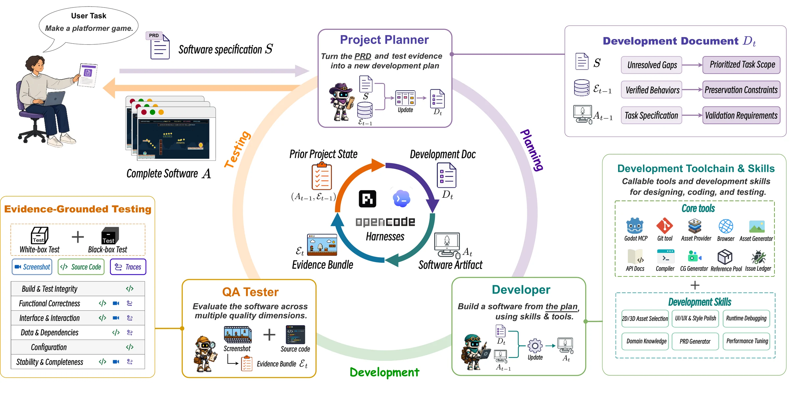
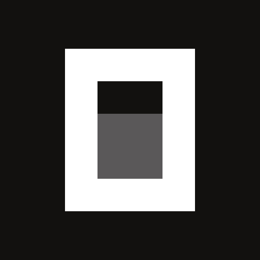

† Equal contribution.
Fusepoint is a single-player narrative first-person shooter developed by HoH from an empty workspace containing only a user-provided product requirements document (PRD), with no human in the loop.
This paper studies autonomous software development by LLM-based coding agents: agents autonomously turn high-level requirements into complete, functional, and usable software without further human intervention.
Harness of Harness (HoH) builds on existing coding-agent harnesses and organizes their executions into iterative planning–coding–testing loops. It balances repair with capability growth, scopes development into small and verifiable increments, separates implementation-time testing from independent evaluation, and constrains verifiable outputs rather than prescribing agent workflows.
Across GameCraft-Bench, FrontierSWE, and ProgramBench, and three harness–model pairs, HoH achieves an average relative gain of 52.25% and a maximum gain of 82.86% after three iterations. In a multi-day deployment with more than 70 iterations, HoH autonomously develops Fusepoint, a human-playable first-person shooter with a coherent storyline, fully implemented core mechanics, polished visuals, and integrated audio.

We evaluate Vanilla and HoH@1–3 on three benchmarks—GameCraft-Bench, FrontierSWE, and ProgramBench—using Codex with GPT-5.5 (high), OpenCode with DeepSeek-V4-Pro, and Pi with MiniMax-M3.
| Harness + Model | Setting | GameCraft-Bench | FrontierSWE | ProgramBench |
|---|---|---|---|---|
| Overall | Dominance‡ | Pass Rate† | ||
| Codex GPT-5.5 (high) | Vanilla | 49.58 | 44% | 60.41 |
| HoH@1 | 59.71 | 58% | 65.42 | |
| HoH@2 | 64.84 | 60% | 65.79 | |
| HoH@3 | 71.52(+21.93) | 71%(+27) | 66.50(+6.09) | |
|
 OpenCode DeepSeek-V4-Pro |
Vanilla | 26.90 | 25% | 45.27 |
| HoH@1 | 28.61 | 28% | 55.33 | |
| HoH@2 | 40.32 | 42% | 55.66 | |
| HoH@3 | 48.98(+22.08) | 44%(+19) | 57.56(+12.29) | |
| Pi MiniMax-M3 | Vanilla | 42.16 | 35% | 35.83 |
| HoH@1 | 49.06 | 62% | 48.68 | |
| HoH@2 | 55.04 | 66% | 53.57 | |
| HoH@3 | 58.78(+16.62) | 64%(+29) | 52.68(+16.85) |
Harness of Harness treats greenfield software development as a harness-level, long-horizon research problem. Across the controlled benchmarks, HoH improves final artifact quality for all three harness–model configurations and continues to benefit from additional iterations. In the multi-day Fusepoint case, HoH transforms a PRD and an empty workspace into a complete, human-playable FPS over more than 70 loops, while versioned artifacts, issue histories, and evidence packets preserve the development trajectory. Future work will extend HoH to broader real-world scenarios, including different types of games and other software systems.
We will publicly release HoH-lite, a lightweight implementation of HoH's core workflow, together with reproducibility materials.
The paper is available on arXiv:2609.01481.
@article{yan2026harness,
title={Harness of Harness: Multi-Day Autonomous Software Development with Continual Improvement},
author={Yan, Haoyang and Su, Min-Le and Zhang, Hangfan and Li, Zhanhao and Zhang, Chen and Zhang, Shao and Chen, Yang and Bai, Lei and Hu, Shuyue},
journal={arXiv preprint},
eprint={2609.01481},
archivePrefix={arXiv},
year={2026}
}